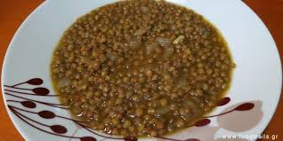

Greek Lentils Recipe

Description
A traditional plate prepared in Greece, as part of the Mediterranean Diet.
Quick and easy to make, this delicious dish can be prepared in under an hour!
Ingredients
In order to make this dish, you are going to need the following:
- 250 gr. lentils
- 500 gr. of Milled Tomatoes
- 250 ml of water
- 1 bay leaf
- 1 block of Knorr with Chicken
- 1 big onion
- 2 garlic cloves
- Olive Oil
- Vinegar
- Sugar
- Salt
- Pepper
Steps
- Let the lentils soak inside water for approx. 12 hours.
- After you drain them, put them in a pot filled with water and let them boil for approx. 15 minutes.
- Chop the garlic and dice the onion.
- Pour the lentils into a colander, and rinse the pot if needed, to get rid of any "foam" created.
- Put the pot back on the stove, pour some olive oil and place the onion and garlic.
- Once they turn "brown", put the lentils back in.
- Add the tomato juice, the water, and stir gently.
- Add salt, pepper, 1 spoon full of sugar, the Knorr block and some vinegar.
- Once it starts boiling, add the bay leaf, lower the heat to medium, close the pot and let it boil for 30-35 minutes.
- Put some more olive oil and vinegar, take it off the stove and let it rest for 10 minutes.
Serve with some feta cheese, and Bon Appetit!